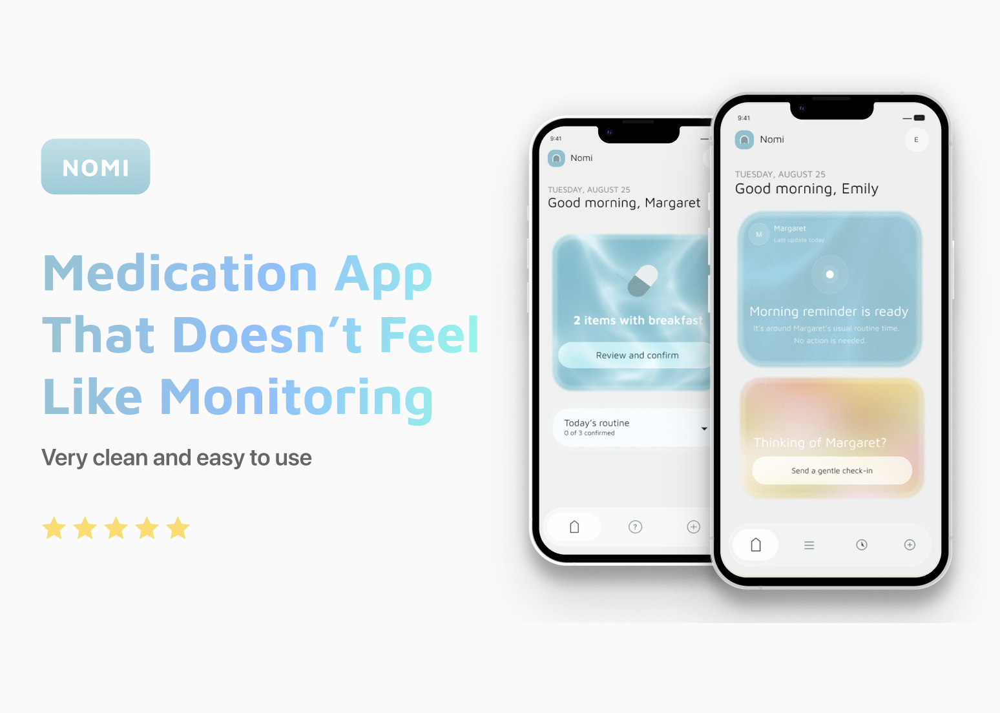
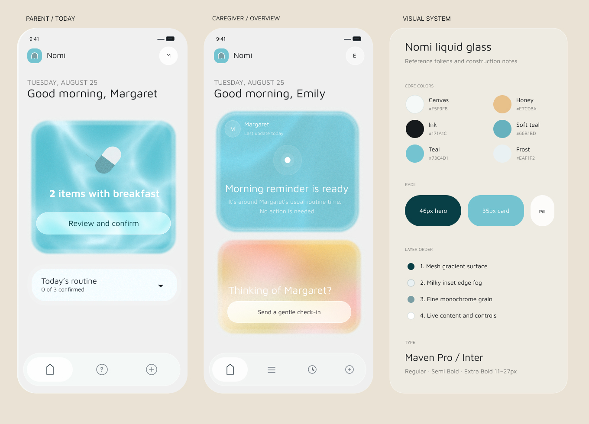

Nomi
A medication-routine companion designed around a tension, not a task.
Nomi started with a problem I had seen in a lot of families: adult children worry that their parents might forget medication, while parents don't necessarily want to be reminded or monitored all the time.
Most medication apps I looked at leaned heavily toward one person. They were either tracking tools for caregivers or reminder apps for older adults. I wanted to explore whether there was a way to support both sides without making the parent feel watched.

Figma visual design
Try the Prototype
Both phones below share the same live state. Send a gentle check-in from Emily's caregiver view and it will appear immediately on Margaret's phone.
Starting Point
My initial question was:
How might we help older adults maintain medication routines without turning family support into monitoring?
I started with this as a hypothesis rather than assuming a reminder app was already the right solution.
Research
I interviewed older adults who manage daily medication and adult children who help support a parent from a distance.
Instead of asking whether they wanted a medication reminder app, I focused on recent situations: when they had forgotten something, when a routine broke down, or when they worried because a family member hadn't responded.
I wanted to understand what people were already doing before designing around a specific solution.
What I Found
Two things came up repeatedly.
1. Parents weren't always forgetting. They were often unsure. Most participants already had medication tied to a routine like breakfast or morning coffee.
The more common problem was:
“I think I took it… but I'm not completely sure.”
That uncertainty usually happened when the normal routine changed — traveling, waking up late, having guests over, or skipping breakfast.
This shifted my thinking away from simply sending more reminders. The product also needed to help someone quickly confirm their own routine without relying on another person.
2. Caregivers struggled most with not knowing. For caregivers, the stressful part wasn't necessarily a missed dose. It was silence.
If their parent didn't respond, they couldn't tell whether they were busy, sleeping, or whether something was actually wrong.
Their choices were usually either:
- do nothing and keep worrying, or
- call
A phone call could feel excessive for something as small as checking whether medication had been taken.
That made me interested in the space between those two actions: a lightweight way to check in without making the interaction feel urgent.
Reframing the Problem
After the interviews, I stopped thinking about Nomi primarily as a reminder app.
The two needs were closer to:
For the parent: “If I'm unsure whether I already took something, help me figure that out quickly without involving anyone else.”
For the caregiver: “If I haven't heard anything, give me enough reassurance that I don't immediately feel like I need to call.”
Both came back to uncertainty rather than reminders.
Design Response
Let parents confirm medication on their own time. Parents can mark medication as taken directly from the daily list, even before a scheduled reminder appears.
A few participants mentioned how annoying it was to receive a reminder for something they had already done. It made the system feel disconnected from their actual routine.
So I wanted the interaction to start with the person's behavior, not the notification schedule.
Create a lighter way to check in. For caregivers, I added a gentle check-in that sits between doing nothing and making a phone call.
It isn't framed as an alert or escalation. It is simply a small nudge that says, essentially, I'm thinking about you — can you let me know you're okay?
This became one of the main interactions I wanted to test. If caregivers ignored it and went straight to calling anyway, then the idea wouldn't really solve the problem I had identified.
I intentionally kept the caregiver side simple. The research didn't point toward a need for more charts, history, or detailed monitoring. In many cases, caregivers wanted less information — they just needed to know when something actually required attention.
Interaction & Visual Design
Language became an important part of the design.
I avoided clinical terms like adherence or non-adherent and used language closer to how participants actually spoke: medication routine, taken, and not confirmed.
I also made a distinction between:
- the system doesn't know whether something happened
- the system knows it didn't happen
Those shouldn't look or sound the same, especially to a caregiver.
Visually, I wanted Nomi to feel calm rather than medical. I used soft gradients, generous spacing, simple typography, and restrained status indicators.
I looked more toward Apple Health and physical pill organizers than caregiver monitoring dashboards.
Accessibility also affected the interface from the beginning. I used larger touch targets, scalable text, and paired icons with labels instead of relying on icons alone.
Reflection
The biggest shift in this project came from realizing that my original framing was slightly wrong.
I started by thinking about medication reminders. But the interviews pointed more toward two smaller moments: a parent wondering, Did I already take this? and an adult child wondering, Is everything okay?
That led to a much simpler product.
Instead of adding more tracking, dashboards, or notifications, I focused on helping each person resolve uncertainty with as little friction as possible.